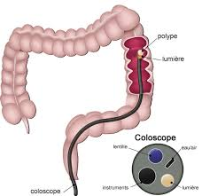

L'endoscopie par voie basse : la coloscopie
Definition
L'endoscopie par voie basse ou coloscopie est un examen endoscopique realise sous analgesie voire anesthesie generale qui permet de visualiser les parois internes du celon grece a l'introduction par l'anus d'un coloscope.
- Coloscopie courte : visualisation directe par un endoscope de la muqueuse rectale et sigmoedienne.
- Coloscopie longue : exploration de la muqueuse rectale, du celon et du cecum avec un coloscope souple et long.

Indications
Diagnostics
- Rectorragie.
- Trouble du transit : diarrhee, constipation.
- Tumeurs.
Therapeutiques
- Polypectomie.
- Electrocoagulation de tumeurs.
- Hemostase lors d'hemorragie.
- Reduction volvulus sigmoede.
Surveillances
- Post-operatoire.
- Prevention par rapport aux maladies hereditaires.
Contre-indications
- Occlusion intestinale.
- Peritonite.
- Grossesse de plus de six mois.
- Colite ulcereuse ou ischemie grave.
Materiel
- Fibroscope de taille adaptee : c'est un tube souple d'environ 1m20 et de 7 a 13mm de diametre. Une extremite comporte les manettes d'orientation de l'appareil et les manettes d'insufflation et d'aspiration, le canal a biopsie et l'optique. L'autre extremite comporte deux faisceaux de fibres (lumiere et image).
- Necessaire au lavage.
- Source de lumiere et appareil a insuffler de l'air.
- Necessaire a l'aspiration.
- Plaque isolante mise a meme la peau, reliee a la source de coagulation pour eviter les brelures.
Suivant le cas :
- Materiel a biopsie.
- Materiel a dilatation.
- Materiel a injection.
- Pinces pour l'ablation des polypes.
- Flacons pour prelevements : examens.
Prevoir :
- Chariot d'urgence.
- Source d'oxygene.
- Un scope.
- Defibrillateur.
- Oxymetre de pouls.
Preparation du patient
Preparation psychologique
- Expliquer le but et le deroulement de l'examen
- Expliquer les consignes et la preparation colique.
- Si examen sans anesthesie generale, prevenir du caractere douloureux de l'examen, de l'evacuation de gaz lors de l'examen.
- Rassurer le patient.
Preparation physique
- Regime sans residu 3 jours avant l'examen : supprimer les legumes secs ou verts, les fruits secs ou frais, les cereales, les fromages fermentes, les viandes en sauce.
Coloscopie realise sans anesthesie generale
Coloscopie courte
- Lavement la veille au soir et le matin.
- Regime sans residu 3 jours avant l'examen.
- Petit dejeuner leger.
Coloscopie longue
- Regime sans residus 3 jours avant l'examen.
- Purger le celon la veille au soir et le matin.
- Perfusion 1 litre de glucose a 5%.
- Petit dejeuner leger.
Coloscopie longue realise sous anesthesie generale
- Prevoir consultation anesthesique avant l'examen.
- Preparation colique : purger et regime sans residus.
- Premedication et pose d'une voie d'abord veineuse.
- Preparation pour l'anesthesie generale : a jeun, retrait de toutes les protheses, vessie vide.
- Dossier complet :
- E.C.G., radiographie pulmonaire.
- Ionogramme, NFS, plaquette.
- Groupe sanguin, rhesus, RAI.
- Bilan de coagulation : TP, TCA.
Video d'une coloscopie
sous anesthesie ambulatoire |
| e Sanofi-aventis France tous droits reserves |
Deroulement de l'examen
- Patient en chemise d'opere et aleze de protection.
- Position en decubitus lateral gauche, jambes repliees.
- Si anesthesie generale : pose des appareils de surveillance : scope, saturometre, dynamap.
- Lubrifie avec du gel le coloscope et le canal anal.
- Introduction du coloscope et progression : le patient est change de position lors du passage des angles coliques.
- Pendant l'examen, on insuffle de l'air pour deplisser la muqueuse.
- L'inspection de la muqueuse se fait au retour du coloscope et les lorsque les differents gestes ou examen sont fais (polypectomie, biopsie).
- L'air est aspire avant le retrait du coloscope.
Complications et surveillances
- Perforation (pneumoperitoine) : douleur abdominale, ballonnement.
- Hemorragie (rectorragie immediate ou retardee due a la chute de l'escarre cicatrise) : pouls, tension arterielle, coloration du facies, rectorragie, melena.
- Infection (sigmoedite) : hyperthermie, douleur, diarrhee.
- Ballonnement : gaz.
- Malaise de a l'anesthesie : conscience, pouls, tension arterielle, saturation.
Nettoyage et desinfection de l'endoscope
1ere etape : pre-traitement :
- Immediate apres utilisation.
- Essuyage de la partie externe de l'appareil et rineage a l'eau.
- Aspiration des canaux et de la lumiere de l'endoscope : test d'etancheite.
- Trempage, lavage, brossage de l'endoscope dans un detergent.
2e etape : rineage :
- Rineage abondant a l'eau pour eliminer toutes traces de detergent.
3e etape : desinfection :
- Ports de gants a usage unique propres ou steriles.
- Trempage dans une solution de produit desinfectant pendant 20 min.
- Irrigation des canaux et de la lumiere en eliminant les bulles d'air.
4e etape : rineage terminal :
- Ports de gants.
- Rineage abondant a l'eau sterile ou filtre.
- Sechage a l'air medical.
- Contrele de l'appareil (orifices, fonctionnement, optiques terminaux).
5e etape : le stockage :
- A l'abri de la lumiere.
- A l'abri de toutes sources de contamination microbienne.
- Si stockage superieur a 12 heures, on refait une nouvelle desinfection.
<="" p="">
Voir aussi :